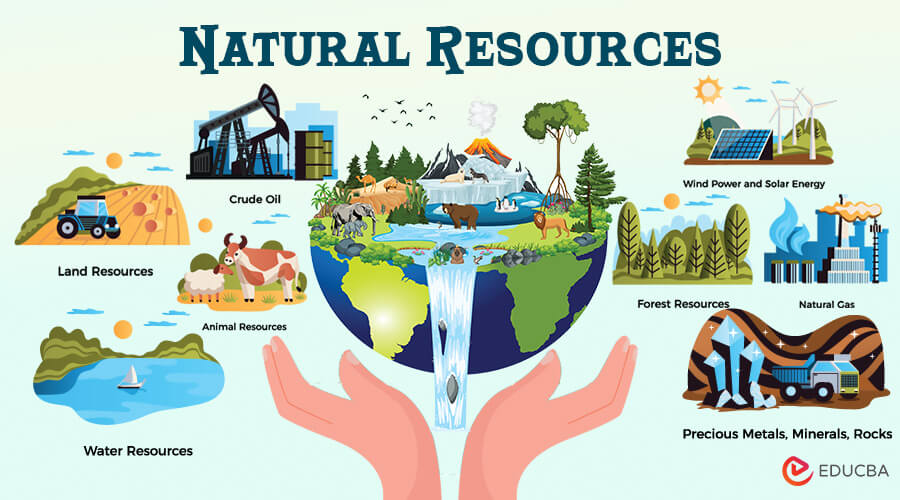

Conservation of Natural Resources
What does Conservation of Natural Resources mean?
Conservation of Natural Resources means conserving natural resources such as water, trees, soil, air, etc. In simple terms it also means to protect the natural materials and objects. In today's world we use many items made by processing of natural objects. For almost every object we use today something or the other in that object is made of something natural. Some natural items are in the verge of getting over and others, when used pollute the air, another natural resource.
How to conserve natural resources?
There are many methods to conserve natural resources, some of them are:
Renewable energy
Plant trees
Conserve electricity
Prevention of soil erosion
Avoid the use of plastic
Conserve water
Crop rotation
Rainwater harvesting
Recycle
Biogas usage in our homes
And many more techniques are there to conserve natural resources

The picture given above displays some types of natural resources
*Information from Google
Hope you liked reading this content!